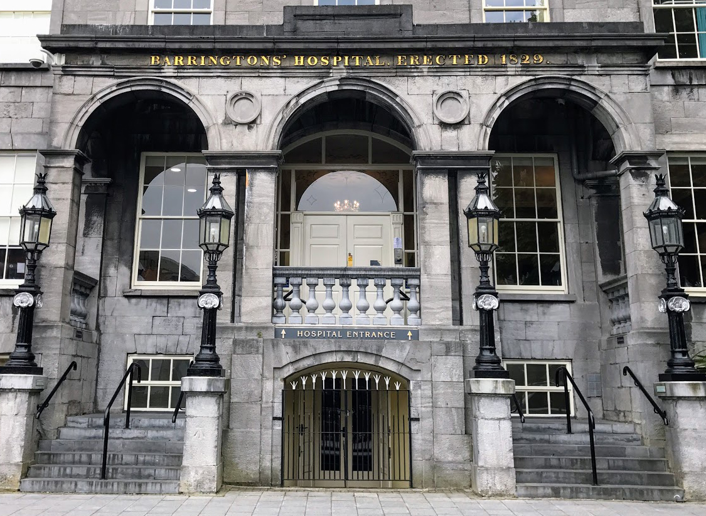
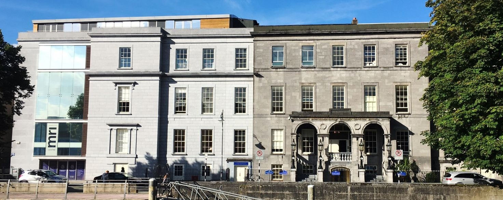

Barringtons' Hospital
From its origins in 1829, Barringtons' Hospital shares a 189-year history with the city of Limerick. In 1821, the city was in the grip of an epidemic fever outbreak and while no sector of society was spared, it was most evident in poorer parts of Irishtown, Palmer's Town, Margaret Street and the surrounding lanes.
The 'Fever and Lock Hospital, or St John's, a lying-in hospital and a lunatic asylum were already in operation in the city, but none provided general medicine or accident care. The Barrington family, having observed private hospitals coming into existence in other parts of the country, explore the idea for such a venture in Limerick.
When the building of the hospital eventually got underway on George's Quay, on the edge of Irishtown, the Limerick Chronicle at the time observed: "We conceived the situation of Barringtons' Hospital well arranged, being placed in the vicinity of the working portion of our community and contiguous to the old town, where accidents generally occur and where timely assistance is most required by the poor".
In a letter penned by the Bishop of Limerick, the Rev Dr J Ryan, seeking support for the hospital, he noted: "The City and Liberties containing, it is supposed, 90,000 habitants, have been hitherto, however strange it may appear, without the benefit of a city hospital. It is true the County Hospital opened its doors and afforded asylum and medical aid to a portion of the sick poor of the city but when it is considered that the County Hospital is often found inadequate to its own imperative claims and that the city patient is only received on the score of courtesy or benevolence and not from any undeniable claim, the necessity of a city hospital is very little lessened by the possibility of such limited and precarious relief."
In early 1829, the Barrington family began purchasing the houses and land that would provide a site for the new hospital. Although Joseph Barrington would receive much of the acclaim for the building, it was his son, Matthew, who provided the money and business expertise for the venture.
Work began on the hospital in March of that year, with Joseph acting as an overseer. It is claimed that during its construction, the elderly Joseph sat every day in his favourite armchair, with his pipe and umbrella, opposite the building, keeping a close eye on how the work was progressing.
The architect was Frederick Darley and the building was constructed entirely in cut stone, three storeys high, with stone stairs and a balcony leading to the main entrance. Again, the Limerick Chronicle observed in October of that year: "Seldom, if ever, has it fallen to our lot to congratulate our fellow citizens, or our own feelings, on so splendid an offering to humanity and charity, as now presents itself to our city; one of no less magnitude than that of a hospital for the poor of Limerick now building, on a most extensive scale, at the expense of a humane and benevolent individual.
For some months past, the eye of our fellow citizens, as they passed along Charlotte's Quay has been arrested on beholding a number artificers and workmen, busily engaged in erecting a handsome cut-stone building on the opposite side of the river. Conjecture had long been afloat to assign a cause for this handsome structure but at length the enigma has been solved. The building is now admitted by its benevolent and charitable founder, Joseph Barrington Esq., to be intended as a general hospital for the poor of his native city, who suffer from accident or chronic disease."
An Act of Parliament was funded by the Barrington family and when passed on May 28, 1830, the 'Act for the Management and Direction of the Hospital founded by Joseph Barrington and his sons in the City of Limerick' saw five governors appointed - Joseph himself and his sons Matthew, Samuel, Croker and Daniel. The full title of the hospital was Barringtons' Hospital and the City of Limerick Infirmary.

The Act also provided for seven ex-officio governors, including the bishop of Limerick, the mayor, the president of the Chamber of Commerce and the sitting MP for the area. Anyone who had donated a sum of more than 20 guineas became a governor for life and those with less steep pockets of three guineas became a governor for one year.
The annual general meeting of the governors were to be held on the second Monday of January each year, with the purpose to elect a standing committee of 13, which would, along with the Barrington family, oversee the running of the hospital for one year. Further provisions in the act dealt with the employment of physicians and surgeons and the conditions for admission. While it was intended for the poor, there was a clause adding that "except in the cases of sudden accidents, which may require immediate relief, no person shall be admitted into said hospital but upon a written recommendation from one of the governors".
Completed after two years, the committee appointed John Allen as the first apothecary, at £50 a year, a position he held until his death in 1849. In addition, he also acted as the hospital's registrar and accountant. Catherine Allen, his wife, was the first matron, at a salary of £30.
The first medical staff were appointed at a committee meeting on August 1, 1831. They were: physicians James F Carroll, Wm J Geary and Michael Brodie and surgeons Richard Franklin, John Thwaites and Thomas Kane. The doctors attended the hospital without a salary, and all except J F Carroll served more than one term of office.
While the hospital was operational by November 5 to qualify for grant aid, the official opening occured on December 1, 1831. The Barringtons expended £10,000 on the hospital, however, for financial reasons, only the side of the building to the right of the main stepped entrance was completed.
Barringtons' Hospital’s original purpose was to provide general medical assistance and emergency care. It did, however, also play a very important role in the helping the sick during severe epidemics, like the outbreak of cholera in 1832, when the local health board commandeered the hospital for a period of 11 months to aid in the relief efforts.
In latter years, a committee was set up to manage and organise the running of the hospital. It was funded by a grant scheme that began at £200 per annum and also received private donations. However, financial woes always seemed to trouble the hospital and in 1988 the announcement was made that the hospital would no longer qualify for funding from the then health board and would close.
This news was met with a public outcry, as the people of Limerick and the Mid-west Region believed Barringtons was a hospital of the people, built for them and for the poor of the city. While 20,000 people turned out to demonstrate against the closure, it wasn't enough to sway government opinion and on March 31, 1988, the doors to the hospital closed.
Before its closure, the last remaining Barrington descendant to have lived in Limerick, Sir Fitzwilliam Barrington, visited the hospital. He was the grandson of Sir Mathew Barrington and great-grandson of Joseph Barrington, Esq.
Today
Three years after its closure, in 1991, it was acquired by consultant surgeon Paul O’Byrne, who saw the need for a private healthcare facility in the region. After significant upgrading and refurbishment over the years, it now operates under Bon Secours Health System as an internationally-accredited private hospital.
On June 29, 1833, a medical library was formed in the boardroom of the hospital and books were donated mostly by the medical staff. Access was allowed every day, except 1.30pm on meeting days. Library visitors were not allowed to wards unless accompanied. The original boardroom is still the same today and contains most of the old library in the bookcases facing the three long windows looking onto the Abbey River. A portrait of Joseph Barrington and his sons also hangs in the boardroom to this day.